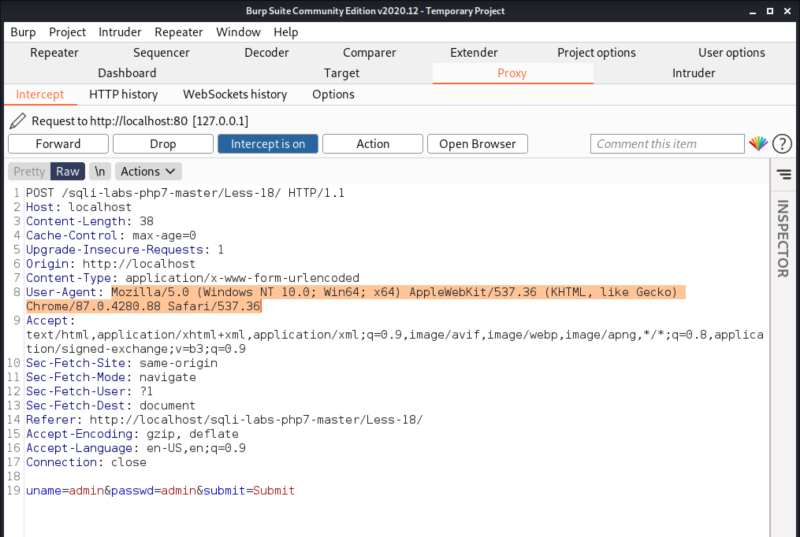
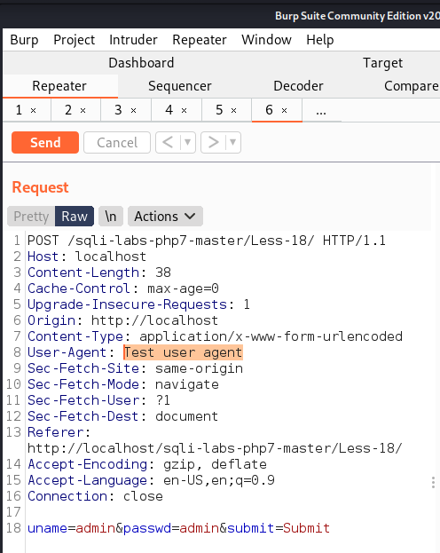
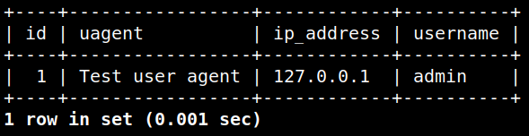

Tampering data with Burp Suite
a) Send your request to Burp Suite, (Configure it if you doesn't) .

You can see the same request as the previous point.
b) Click on “Action” button and choose “Send to Repeater”. Then go to “Repeater” tab.
c) Change the “User/Aggent” value to “Test user agent” and click on “Send” button..

d) You'll see the Response in the right side panel.
e) Click on “Render” button.
Result: You see the text we've changed.
f) Go to your “mysql” shell.
select * from uagents;

Result: The test has been injected into the Database.